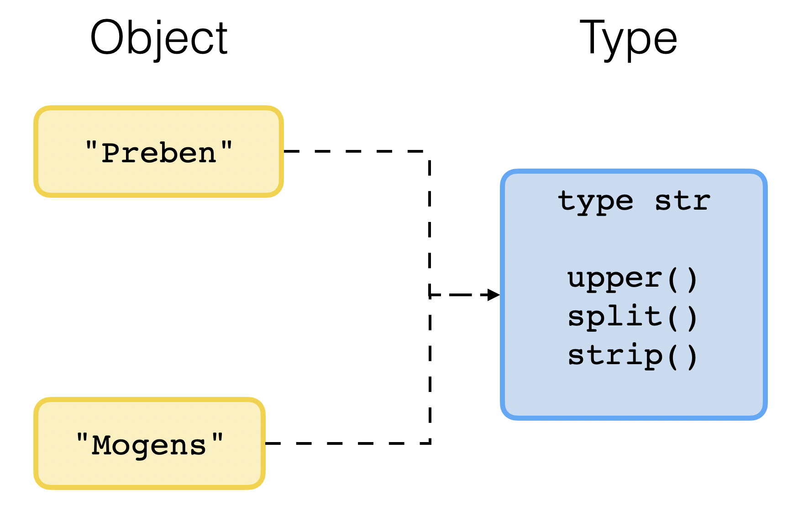
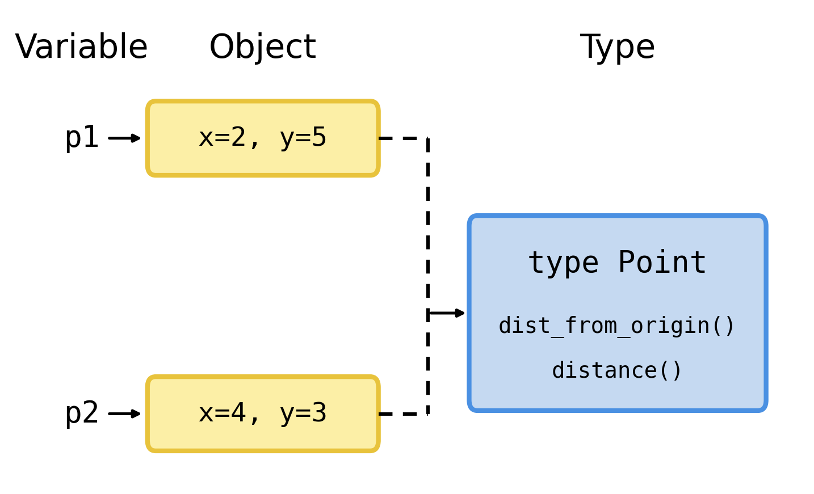

import sandbox_widget
import codelens_widget38 Classes
Do you know what type you are? Python objects do. This chapter is about how they know it, and about how you can make your own types of objects.
As you learned in Chapter 18, python values are objects, which package the value or data with useful functionality in the form of methods. Methods are very similar to functions but know what data they are packaged with. So calling the upper method on a sting ("banana".upper()) amounts to saying: “Hey string, uppercase yourself!”. If you had a function that could uppercase a string, calling it would be like saying “Hey function, uppercase this string”.
%%sandbox
"banana".upper()Now you may ask: where does "banana" keep that upper method? The string "banana" is stored in your computers memory along with all the other strings you have defined. You may think that each one somehow carries around the code defining the definitions of upper, and lower, and strip, and replace, and the forty-odd other string methods? That would be an awful lot of luggage for each object. If each object carried its own method definitions, it would take up a lot of memory on top of the Python value it carries and would fill up memory with duplicate definitions as you define more strings. To avoid this, all objects of the same type, say strings, share their method definitions and everything else that goes into defining an object of that type. That way, storing an extra string like "banana" only takes six bytes of extra memory.
In Figure 38.1 you can see how individual objects relate to the type that defines them. The two string objects carry only their data (in this case "Preben" and "Mogens") and the knowledge that they are of type str. They are different objects and are stored in different places in memory, but defer to a single shared definition of their methods.

Each individual object holds its own data, and the type holds the functionality. When you write "banana".upper(), Python checks which type the object is, finds it is a str, gets the upper method from the str type, and runs it on the particular (banana) data carried by the object.
%%sandbox
type("banana")Exercise 38-1
If an object’s type defines its methods, what do you think happens if you ask an object to run a method that is not defined by its type? Decide before you run the cell below, and then inspect the output. Hint: An attribute is something you can access using the dot (.) operator on the object (the . between "banana" and upper).
%%sandbox
x = 7
x.upper()Exercise 38-2
You met the type builtin function back in Section 16.0.0.14. This is the one you use to get the type of of an object. Here are all the ones you have met so far. Decide what gets printed before you run the cell? Then read the code and check. How much about each type of object can you reconstruct from memory?
%%sandbox
print(type("3"))
print(type(3))
print(type(3.0))
print(type(False))
print(type([]))
print(type({}))Why it prints <class 'int'> rather than something like <type 'int'>. I am sure the very idea that you might never know drives you crazy.
Classes define types
The type of an object is defined by its class. The str type is defined by the str class. So far you have seen the builtin types str, int, float, bool, list, tuple, and dict. There are many more, and the beauty of it is that you can make them yourself too. To do that, you write a class that defines your type of object. Populating your class with definitions of methods makes these available to every object of that type.
What might a useful type of object to make? It would carry some particular kind of data that it makes sense to pair with some custom functionality. Could it be a kind of biological data? Maybe an aggregate of data values that together represent something meaningful? Ponder on that for a bit before you go on?

In the rest of this chapter, we will be working with points in a coordinate system. Not because there is anything special about coordinates but because it is the simplest example that still teaches you all you need to know about classes. Figure 38.2 shows two points in a coordinate system. The point p1 sits at some x1 and y1, and p2 sits at x2 and y2. You could keep those two points in four variables:
x1 = 2
y1 = 5
x2 = 4
y2 = 3However, manually naming x and y variables in a way that pairs them up becomes cumbersome if you have a lot of points (maybe millions). You could can that by making a type of object that represents a coordinate pair.
In the rest of this chapter we build a Point class that defines a Point type of objects.
A class is the definition of a type.
Exercise 38-3
Before you read on, spend a couple minutes with pen and paper thinking about what data each point object need to carry and what would be convenient functionality for a point object. See if you can write down three.
A Point class
The simplest version of our Point class looks like this. Run the cell before you go on.
class Point(object):
...In the first line, class is the special keyword used for class definitions, Point is the name we chose for our class (traditionally capitalized), and object between the parentheses is the generic object type that all Python objects are made from. The colon at the end signifies that code defining the type is indented below it. For now there is nothing there (..., which is just the Python-way of filling a space with nothing).
To create a new point, you simply call the Point class using the round parentheses as you would a function:
p = Point()
print(p)At this point our class does not define any data or functionality. So the object it creates is no different from the generic object that all new objects start out as. We need to initialize the generic object to make it our own. We do that by adding a a special method called __init__ that runs when an object is created:
class Point(object):
def __init__(self):
print("Yay! I exist. My type is", type(self))
p = Point()As you can see, a method definition is just a function definition inside a class. Everything you know about functions definitions apply to methods as well. The self parameter points to the newborn object to be initialized.
In the version above, the __init__ method just prints a happy message. We would like Point() to accept two arguments like Point(2, 5) To do that we just add x and y parameters to the method:
You may wonder where the value of self comes from since we did not pass any arguments when we call Point(). The reason is that when you call Point(), what really happens is Point.__init__(object).
class Point(object):
def __init__(self, x, y):
print("Yay! I have coordinates: {},{}".format(x, y))
p = Point(2, 5)Now that we can pass coordinates to the new object, we just need it to also store them as its data. We store each one as object attributes using the . operator:
class Point(object):
def __init__(self, x, y):
self.x = x
self.y = yNow the created point object has x and y attributes, which are basically object variables like any other that we can access using the . operator. The dot is the same one you have used to access methods. It basically means: go into this object and get me the thing called…. That thing may be a method and it may be an attribute storing some data value.
p = Point(2, 5)
print(p.x)
print(p.y)Exercise 38-4
Having defined the class in the cell above, what do you think these two lines print? Decide first, then run.
p = Point(4, 3)
print( type(p) )
print( Point )Point is the class. type(p) returns what type the object is. If those two are the same, it must be because the class and the type are the same object. That is what “classes define types” means, quite literally.
Exercise 38-5
Attributes are variables, and variables can be assigned to. Predict what this prints, then run it:
%%sandbox
class Point:
def __init__(self, x, y):
self.x = x
self.y = y
p = Point(4, 3)
p.x = 100
print(p.x, p.y)Exercise 38-6
Now make two points and convince yourself that they are really are separate objects with separate data. Predict all four numbers before you run it:
%%sandbox
class Point:
def __init__(self, x, y):
self.x = x
self.y = y
p1 = Point(2, 5)
p2 = Point(4, 3)
p1.x = 100
print(p1.x, p1.y)
print(p2.x, p2.y)See if you can see the correspondence to Figure 38.1 again: Point is the blue box and your two points are the yellow ones.
Exercise 38-7
What do you think happens here? Make up your mind, then try it:
%%sandbox
class Point:
def __init__(self, x, y):
self.x = x
self.y = y
p = Point(4, 3)
print(p.z)How should it look as a string?
Printing a point gave us that unfriendly <__main__.Point object at ...>. Let us do something about that. When you print an object, Python needs to turn the object into some kind of meaningful string to print. If the type of object has a __str__ method, it will use whatever that method returns. If not, it will fall back to <__main__.Point object at ...>.
class Point:
def __init__(self, x, y):
self.x = x
self.y = y
def __str__(self):
return "({}, {})".format(self.x, self.y)
p = Point(4, 3)
print(p)See how nicely it looks now. We could also have made it "Point({}, {})".format(self.x, self.y). What would that have printed?
self is just the object itself. Again, if you wonder where that value comes from the self, it may make more sense if you know that what really happens when you print(p) is print(Point.__str__(p)).
If you put p on the last line of a cell and expect the value to display as (4, 3), you will be disappointed.
pThis it is because displaying the value produced by the last line of code cell does not call __str__, it calls the one named __repr__. So if you want to fix this, all you have to do is make a copy of your __str__ method and call it that __repr__:
class Point:
def __init__(self, x, y):
self.x = x
self.y = y
def __str__(self):
return "({}, {})".format(self.x, self.y)
def __repr__(self):
return "({}, {})".format(self.x, self.y)
p = Point(4, 3)
p Exercise 38-8
Delete the return from __str__ so the method body is just the "({}, {})".format(self.x, self.y) line without return, and run the program again. What is printed? Why? If you have forgotten, Section 16.0.0.25 is where a function without a return was first discussed.
Exercise 38-9
Change __str__ so that a point prints as Point at x=4, y=3 instead. Predict what your program will print, then run it.
A method of your own
Now lets us add a method that actually computes something. How far is a point from origin? That is the Pythagorean theorem you used in Section 12.0.0.7: the distance is \(\sqrt{x^2 + y^2}\), and taking a square root is exponentiation to \(0.5\).
class Point:
def __init__(self, x, y):
self.x = x
self.y = y
def __str__(self):
return "({}, {})".format(self.x, self.y)
def __repr__(self):
return "({}, {})".format(self.x, self.y)
def dist_from_origin(self):
return (self.x ** 2 + self.y ** 2) ** 0.5Notice how we don’t need to pass any arguments to dist_from_origin because all the information is already carried by the object. Read it and run it. You should get 5.0, which is the nicest right-angled triangle there is.
p = Point(4, 3)
dist = p.dist_from_origin()
print(dist)Every point you ever make from now on can do this. Figure 38.3 is the same picture as before, now with your own type in the blue box.

Again, p.dist_from_origin() actually means Point.dist_from_origin(p). Try to run both to see for yourself. Nobody writes Point.dist_from_origin(p) in real code. But knowing that it means the same thing is what stops self from feeling like magic. It is just the first argument.
Exercise 38-10
Predict what this prints, then run it:
p1 = Point(3, 4)
p2 = Point(6, 8)
print(p1.dist_from_origin())
print(p2.dist_from_origin())
print(p1.dist_from_origin() + p2.dist_from_origin())Distance to another point
Distance from origin is a special case. What you usually want is the distance between two points. The Pythagorean theorem still applies: the two legs of the triangle are the difference in x and the difference in y.
Exercise 38-11
Fill in the three missing lines below. Two hints and then you are on your own. First, distance has two parameters: self and other. Python fills in self automatically, other is the argument you pass to distance(other). Since they are both Point objects, you have can access the x and y attributes of both of them. Take your time with this one. Work out on paper what the answer should be before you run anything, so you know whether to believe the number that comes out.
class Point:
def __init__(self, x, y):
self.x = x
self.y = y
def __str__(self):
return "({}, {})".format(self.x, self.y)
def __repr__(self):
return "({}, {})".format(self.x, self.y)
def dist_from_origin(self):
return (self.x ** 2 + self.y ** 2) ** 0.5
def distance(self, other):
...
...
return ...
p1 = Point(4, 2)
p2 = Point(3, 7)
dist = p1.distance(p2)
print(dist)Exercise 38-12
Once your distance method works, open the assistant in the browser, show it your class without the distance definition. Ask it to write a distance method for the Point classn and compare it with your own. Is it doing the same arithmetic? Did it use different variable names, or fewer lines? Does it handle anything you did not think of?
Exercise 38-13
Should p1.distance(p2) and p2.distance(p1) give the same answer? Decide what you believe, argue to yourself why, and then check it.
How about Point(0, 0).distance(Point(3, 4)) and Point(3, 4).dist_from_origin()?
Peeking behind the curtain, again
You have already added three of the special methods with double underscores around their names, methods that Python calls when it needs to. There are many more, each one defining behavior of the object in some context.
Remember __add__ from Section 18.0.0.11? The + operator does not know how to add anything. It asks the object on its left to add the object on its right, by calling its __add__ method. So if you give your class an __add__ method, + will work on your objects too:
class Point:
def __init__(self, x, y):
self.x = x
self.y = y
def __str__(self):
return "({}, {})".format(self.x, self.y)
def __repr__(self):
return "({}, {})".format(self.x, self.y)
def dist_from_origin(self):
return (self.x ** 2 + self.y ** 2) ** 0.5
def distance(self, other):
...
...
return ...
def __add__(self, other):
new_x = self.x + other.x
new_y = self.y + other.y
return Point(new_x, new_y)Look carefully at what __add__ returns. It is not a number but a brand new point Point(new_x, new_y). A class can make objects of its own type inside its own methods.
p1 = Point(4, 2)
p2 = Point(3, 7)
print(p1 + p2)Exercise 38-14
What do you think p1 + p2 + p1 reduces to? Do the substitution and reduction steps one at a time. Then run it.
Exercise 38-15
Comparison works the same way. The == operator calls a method named __eq__. Predict what this prints before you run it:
class Point:
def __init__(self, x, y):
self.x = x
self.y = y
def __str__(self):
return "({}, {})".format(self.x, self.y)
def __repr__(self):
return "({}, {})".format(self.x, self.y)
def dist_from_origin(self):
return (self.x ** 2 + self.y ** 2) ** 0.5
def distance(self, other):
...
...
return ...
def __add__(self, other):
new_x = self.x + other.x
new_y = self.y + other.y
return Point(new_x, new_y)
def __eq__(self, other):
return self.x == other.x and self.y == other.y
p1 = Point(4, 2)
p2 = Point(3, 7)
print(p1 == p2)A Gene class
A gene might hold a DNA sequence, and asking how long a gene is should be an easy thing to do. When you use the builtin len function on an object, Python calls the objects __len__ function if it exists. Have a look at this one:
%%sandbox
class Gene(object):
def __init__(self, name, sequence):
self.name = name
self.sequence = sequence
def __str__(self):
return "{} ({} bases)".format(self.name, len(self.sequence))
def __len__(self):
return len(self.sequence)
gene = Gene('BRCA1', 'ATGGATTTATCTGCTCTTCGCGTT')
print(gene)
print(len(gene))Notice that __len__ does not count anything itself. It hands the question on to the string it is holding, because a string already knows how long it is. Most of the methods you write will be like this: short, and mostly delegating to objects that already know how to do the work.
Exercise 38-16
Give Gene a method called gc_content that returns the fraction of the sequence that is G or C. You already know everything you need: count is a string method, and len you have just used twice. Test it on 'GGCC', where you know the answer must be 1.0, and on 'ATAT', where you know it must be 0.0. If your method passes both of those, try it on the real sequence above.
Exercise 38-17
Show the assistant your Gene class and ask it: “what does len(gene) do here?” Then ask it: “what would gene[0] do?” One of those two answers is going to be wrong, or at least is going to describe something your class cannot do. Find out which by running both. Write down in your logbook what it claimed and what actually happened.
General exercises
Exercise 38-18
Look at the code below and decide what is printed. Then run it. If you were wrong, work out why.
class Dog(object):
def __init__(self, name):
self.name = name
def speak(self):
return "{} says woof".format(self.name)
d1 = Dog('Mogens')
d2 = Dog('Preben')
print(d1.speak())
print(d2.speak())
print(Dog.speak(d1))Exercise 38-19
The code below is broken. See if you can spot the problem. Run it, read the error message, and fix it. The error message is not especially friendly, so read it twice: it is counting arguments, and it is counting one more than you passed.
Once you have found the bug, ask the assistant to explain why the message counts one argument more than you passed. The answer is about self, and it is the most useful single thing to understand about methods, so do not accept an explanation you cannot repeat in your own words.
%%sandbox
class Dog(object):
def __init__(name):
self.name = name
d = Dog('Henning')
print(d.name)Exercise 38-20
This one is broken too, but in a sneakier way: Python complains about a line that is perfectly fine. Run it and read the error. Python points at dist_from_origin and says the point has no attribute x. But dist_from_origin is written correctly. The mistake is two lines earlier, in __init__, and __init__ ran without complaining at all. Where is the mistake, and why did Python only notice later? This gap between where the bug is and where Python trips over it is the single most common reason a beginner stares at the wrong line for twenty minutes.
Ask the assistant which line is at fault, and ask it before you tell it anything about your own verdict. Python’s complaint points at a line that is perfectly fine, so an assistant that trusts the traceback will point at the wrong line too. Decide for yourself first, then run your fix and see which of you was right.
%%sandbox
class Point:
def __init__(self, x, y):
x = x
y = y
def dist_from_origin(self):
return (self.x ** 2 + self.y ** 2) ** 0.5
p = Point(3, 4)
print(p.dist_from_origin())Exercise 38-21
Write a class called Rectangle that is initialized with a width and a height, and that has a method area and a method perimeter. Then write a __str__ method so that printing a rectangle shows something like Rectangle 3 x 4. Predict what each of your methods will return for Rectangle(3, 4) before you run anything.
Exercise 38-22
Add a method is_square to your Rectangle that returns True or False. Do not write an if statement. If you are tempted to, reread Section 12.0.0.10: a comparison is already a boolean.
Exercise 38-23
Paste the Point class with __add__ into the assistant and ask it to explain, line by line, what happens when Python evaluates p1 + p2. Then check its story against what you know: does it get the order of the substitutions right? Does it correctly say what __add__ returns? Does it call __init__ a constructor? Score it, and put the score in your logbook.